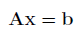
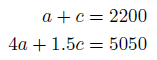
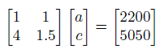

System of Linear Equations (SLE)
Introduction
A system of linear equations has the following form:

Where A is a m x n sparse matrix, b is a n x 1 dense vector, and we are solving for the n x 1 vector x.
Example Problem[2]
The admission fee at a small fair is $1.50 for children and $4.00 for adults. On a certain day 2200 people enter the fair and $5050.00 is collected. How many children and how many adults attended?
Write as a system of linear equations, assuming a is the number of adults, and c is the number of children:

Now convert to standard form:

This can be solved using the OPTI Toolbox as follows:
A = [1 1; 4 1.5];
b = [2200; 5050];
% Build OPTI Problem
Opt = opti('sle',A,b)
% Solve
x = solve(Opt)
And the solution is:
x =
700
1500
Considerations
This problem is typically solved in Matlab using matrix left divide ( \ ), however you may also want to solve this problem using one of the supplied OPTI solvers, for example MUMPS.
Normally your system of equations will be large and sparse (A matrix), with many thousand of non-zero entries.
Copyright © 2011-2013 Jonathan Currie (I2C2)